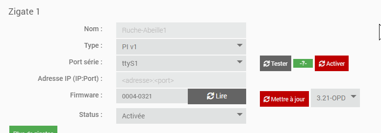
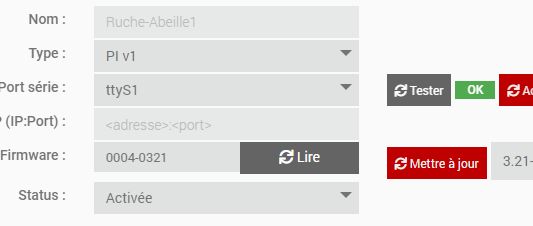
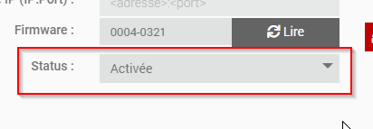
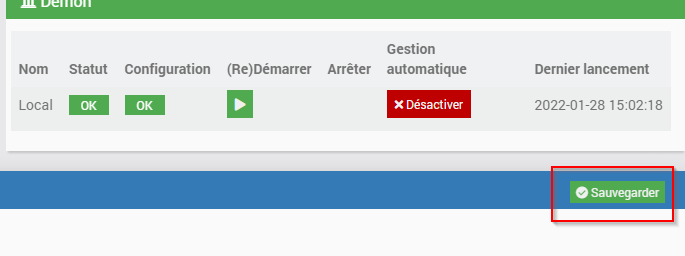
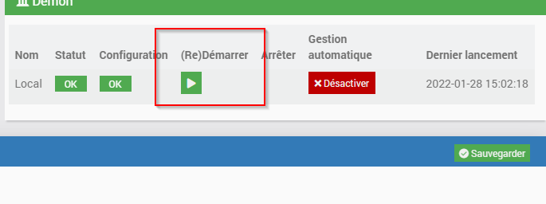

La page de configuration d’Abeille¶
Dépendances¶
2 éléments sont potentiellement requis en fonction du type de zigate que vous utilisez:
le package WiringPI est requis si une des zigates est du type « PI »
le package “socat” est requis si une des zigates du type « WIFI »
Configuration de la zigate¶
L’exemple ci apres montre la configuration d’une zigate du type « PI », connectée sur le port « ttyS1 » et activée.
Les éléments a remplir sont les suivants
Le type de zigate: « PI », « USB », « DIN » ou « WIFI » et la version correspondante
Si type USB/PI ou DIN, le port utilisé
Si type WIFI, l’adresse IP et le port de la zigate
Une fois ces éléments connus, il est possible de faire un test de communication (sauf version WIFI pour l’instant) via le bouton « Tester ». Si le test est bon, « OK » en vert apparaitra. Sinon le log « AbeilleConfig.log » doit donner + de précisions quant au problème rencontré.
Une fois le test OK, il ne vous reste qu’a activer la zigate, sauvegarder, et redémarrer Abeille
puis
et enfin
